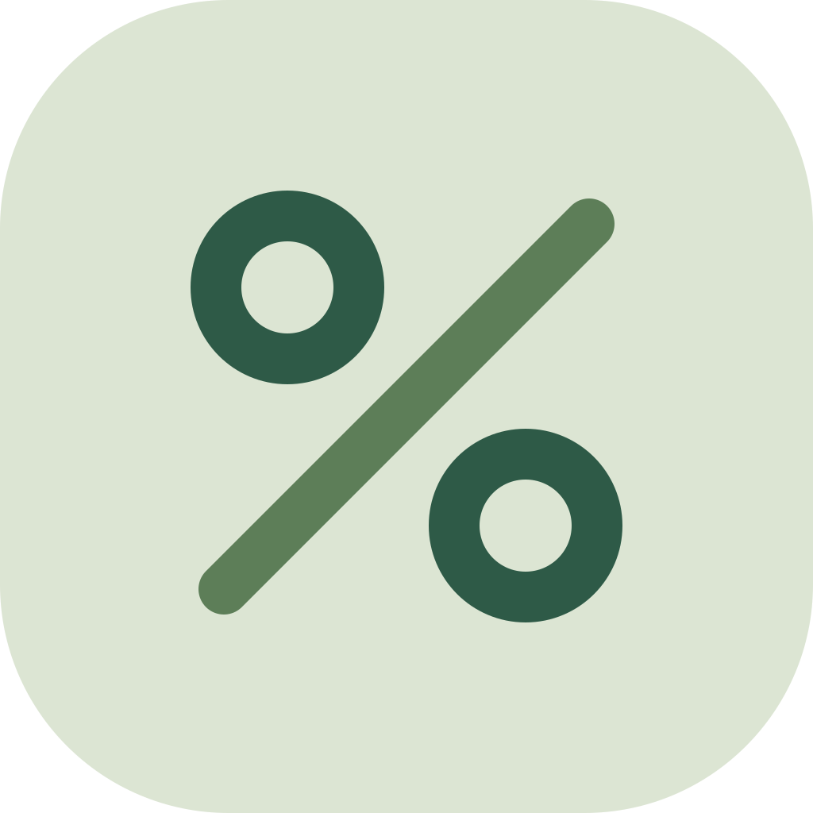

ECB Rates & Euro Inflation API: policy rates, FX, €STR, HICP
On the HTTP APIAsk for euro-area rates by plain name and get the latest value, when it last changed, the change and the recent history. ECB policy rates, euro reference exchange rates, €STR, euro-area and national government bond yields, and Eurostat HICP inflation for every EU country, with no SDMX series keys to work out. Built for AI agents and for anyone who needs a quick, sourced number.
Pricing (pay per event): $0.002 per series returned ($2 per 1,000). A series with no data and the catalogue are free; an unknown name fails in a second and costs nothing. The same data is available free of charge from the ECB (data.ecb.europa.eu) and Eurostat; you pay for the plain-name lookup, the latest/previous/change summary and the hosted API.
Questions agents ask
- “What's the ECB deposit rate now, when did it last change, and how does euro-area inflation compare? Cite the source.”
Example
Input
{ "series": ["ecb_deposit_rate", "eur_fx:USD", "hicp:EA"] }Output
{
"schema_version": "1",
"series": "ecb_deposit_rate",
"title": "Deposit facility - date of changes (raw data) - Level",
"description": "One observation per rate change; latest_date = when the current rate took effect.",
"source": "ECB",
"dataset": "FM",
"series_key": "FM.B.U2.EUR.4F.KR.DFR.LEV",
"frequency": "changes",
"unit": "percent per annum",
"latest_date": "2026-09-16",
"latest_value": 2.5,
"previous_date": "2026-06-17",
"previous_value": 2.25,
"change": 0.25,
"observations": [
{ "date": "2025-06-11", "value": 2.0, "status": null },
{ "date": "2026-06-17", "value": 2.25, "status": null },
{ "date": "2026-09-16", "value": 2.5, "status": null }
],
"observation_count": 12,
"source_url": "https://data.ecb.europa.eu/data/datasets/FM/FM.B.U2.EUR.4F.KR.DFR.LEV",
"api_url": "https://data-api.ecb.europa.eu/service/data/FM/B.U2.EUR.4F.KR.DFR.LEV?format=csvdata&lastNObservations=13",
"attribution": "Source: ECB statistics (ECB Data Portal, data.ecb.europa.eu). Values and metadata are reproduced unmodified and are available free of charge from the ECB. The `change` field is computed by Bosco Labs (latest_value - previous_value) and is not an ECB figure.",
"warnings": [],
"error": null,
"retrieved_at": "2026-11-05T22:01:42+00:00",
"duration_seconds": 0.16
}What you get
| Field | Type | Meaning |
|---|---|---|
schema_version | string | Output schema version, "1". |
series | string | The series as requested, normalised (e.g. eur_fx:USD, hicp:NL:core), or the raw ECB key. |
title | string | null | The series title exactly as the source states it (ECB TITLE; Eurostat dataset, category, area and unit labels). null on error rows. |
description | string | What the series is and how to read it, in plain words (written by Bosco Labs). |
source | string | Publisher of the values. |
dataset | string | Source dataset: ECB dataflow (FM, EST, EXR, YC, IRS, ...) or Eurostat dataset code (prc_hicp_minr). |
series_key | string | Exact series identifier at the source: ECB dataflow.key (e.g. EXR.D.USD.EUR.SP00.A) or Eurostat dataset/freq.unit.coicop18.geo. |
frequency | string | null | changes (one observation per policy-rate change), daily, monthly, quarterly or annual. |
unit | string | null | Unit of the values, e.g. percent per annum, USD per 1 EUR, annual rate of change, %. |
latest_date | string | null | Date of the newest observation: YYYY-MM-DD (daily, change dates), YYYY-MM (monthly), YYYY (annual). For policy rates: the day the current rate took effect. |
latest_value | number | null | Newest value, unmodified from the source. |
previous_date | string | null | Date of the observation before the newest one (for policy rates: the previous change). |
previous_value | number | null | Value of that previous observation, unmodified. |
change | number | null | latest_value - previous_value, computed by Bosco Labs (exact decimal difference); not an official ECB or Eurostat figure. |
observations | array | The newest last observations, oldest first, each {date, value, status}. status is the source's observation flag, null when normal (ECB: P provisional, E estimated; Eurostat: e estimated, p provisional, b break in series). |
observation_count | integer | Number of entries in observations. |
source_url | string | null | Human-readable page of the series: ECB Data Portal series page or Eurostat data browser table. |
provided_by | string | Who compiled this row; cite together with source_url. |
api_url | string | null | The exact API request the values came from (re-run it to verify). |
attribution | string | Required source credit: names the source, says the values are unmodified and available free of charge from it, and marks change as computed by Bosco Labs. Keep it when you republish the values. |
warnings | array | Caveats in plain words, e.g. a requested frequency the series doesn't have, or a window cut to the newest 1000 observations. |
error | string | null | Why this series has no data (unknown currency, area or category, empty date window, source down), with valid examples. Rows with an error are not charged. |
retrieved_at | string | When the data was fetched (ISO 8601, UTC). |
duration_seconds | number | How long fetching all series took. |
Use with AI agents (MCP)
Add this URL to your MCP client (Claude, Cursor, VS Code, ...) to load the Actor as a tool through the Apify hosted MCP server. It signs you in with OAuth or accepts Authorization: Bearer <APIFY_TOKEN>. It works once the Actor is listed on the Apify Store; until then use the HTTP API or the remote MCP server at https://api.boscolabs.dev/mcp.
https://mcp.apify.com?tools=bosco_labs/eu-rates-inflationFor “What's the ECB deposit rate now, when did it last change, and how does euro-area inflation compare? Cite the source.” the agent passes:
{ "series": ["ecb_deposit_rate", "hicp:EA"], "last": 3 }one small JSON item per series (1-2 KB with the default 12 observations), stable snake_case fields, numbers as numbers, ISO dates, null for unknown, a source link and the exact API call per series. Unknown names fail at once with "did you mean" suggestions. Fetching takes well under a second; each source has a 15-second limit with two retries.
Or call the Apify API: POST https://api.apify.com/v2/acts/bosco_labs~eu-rates-inflation/run-sync-get-dataset-items with the input as JSON body. Cost: $0.002 per series returned (catalogue free) (HTTP API).
HTTP API
Also on the Bosco Labs HTTP API (beta): same input and same rows as the Actor, $0.002 per series returned (catalogue free) from prepaid credits (max 20 series per call). Get a key with a $0.50 free trial; see prices and limits.
curl https://api.boscolabs.dev/v1/eu-rates-inflation \
-H "Authorization: Bearer $BOSCO_API_KEY" \
-H "Content-Type: application/json" \
-d '{"series": ["ecb_deposit_rate", "hicp:EA"], "last": 3}'Source: ECB statistics (data.ecb.europa.eu). The data are free of charge from the ECB; we charge for processing and delivery, not for the data. Eurostat HICP: © European Union, free of charge from Eurostat. The change field is computed by Bosco Labs.
Input fields
| Field | Type | Meaning |
|---|---|---|
series | array | Which series to fetch, by plain name (case-insensitive), up to 20 per run, e.g. ["ecb_deposit_rate", "eur_fx:USD", "hicp:EA"]. Names: ecb_deposit_rate, ecb_main_refi_rate, ecb_marginal_lending_rate (one observation per rate change), estr (€STR), eur_fx:<CUR> (ECB reference rate, CUR per 1 EUR, e.g. eur_fx:GBP), euro_area_yield_curve:<maturity> (AAA spot yield, e.g. 10Y, 3M, 1Y6M; add :all for all government bonds), gov_bond_10y:<country> (monthly 10-year yield, e.g. gov_bond_10y:IT), hicp:<geo>[:<variant>] (Eurostat inflation; geo EA, EU or NL, DE, ...; variant annual (default), monthly, index, core, energy, food, services, goods, or an ECOICOP 2 code like CP01). An unknown name fails at once with suggestions and costs nothing. Empty (with no rawSeriesKey) = list the catalogue for free. |
last | integer | How many of the newest observations to return per series, e.g. 12 (the last 12 months of a monthly series). Empty = 12, or with dateFrom every observation in the window (up to 1000). latest_value, previous_value and change are always filled. The price is the same for any number. |
dateFrom | string | First date of the window, YYYY-MM-DD, e.g. "2026-01-01". For monthly series the month holding the date counts. Empty = no lower bound (only last limits). |
dateTo | string | Last date of the window, YYYY-MM-DD, e.g. "2026-03-15". With last = 1 you get the value on that date or the last one before it (weekends and holidays have no FX value). Empty = up to the latest published value. |
frequency | string | Only where the source has it: eur_fx daily (default), monthly or annual averages; policy rates daily (rate on every day) instead of the default one-row-per-change. Other series keep their own frequency and say so in warnings. Empty = each series' default. |
rawSeriesKey | array | Optional full ECB Data Portal series keys (dataflow + key, every dimension filled, no wildcards), e.g. ["EXR.M.CHF.EUR.SP00.E"]. Same output and price as named series. Empty = none. |
mode | string | "series" (default) fetches the series above. "catalogue" returns one row per supported name pattern with its source dataset, key template, frequencies, unit and an example, free of charge. |
Sources, licence and limits
How fresh is it? Live: every call reads the ECB Data Portal and Eurostat directly. ECB reference rates appear around 16:00 CET on TARGET business days, €STR at 08:00 CET for the previous business day, yield curves daily, policy rates the day a change takes effect. Eurostat publishes the euro-area HICP flash estimate around the start of the month (status e) and full country data mid-month, so a country's newest month can lag the euro area's.
Why is there no FX rate for a weekend date? The ECB sets reference rates on TARGET business days only. Use dateTo with last: 1 to get the last rate on or before a date.
Which HICP version? Since early 2026 Eurostat publishes HICP under ECOICOP version 2 (dataset prc_hicp_minr, history back to 1996). The old prc_hicp_manr stopped at December 2025 and is not used.
Is there a daily Bund or BTP yield? Not as open ECB data. gov_bond_10y:<country> is the monthly average 10-year yield (the EU convergence-criterion series). For a daily benchmark use euro_area_yield_curve:10Y (AAA bonds) or euro_area_yield_curve:10Y:all.
Euribor? Mortgage rates? Euribor is published by EMMI, not the ECB, and is not included. Bank lending rates (MIR) and any other ECB series can be fetched with rawSeriesKey.
Can I republish the values? Yes, with the attribution in each row: the ECB allows reuse if the ECB is quoted as the source, the statistics are not modified, and buyers are told the data is free from the ECB; Eurostat allows reuse with acknowledgement of the source. Our change field is marked as computed by Bosco Labs.
Personal data? None. These are aggregate statistics.